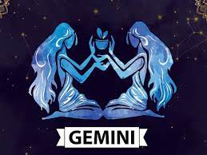

Gemini is an air sign, which automatically brings it to my top six. So many peole hate on Gemini's because they are "two-faced," but very few people look at the good side of them. Gemini's are the life of the party. They are outgoing, intelligent, adaptable, honest, bold, fun, lively, and they have great conversations. Gemini's are easy-going and love to be surrounded by interesting people. Some people in our grade who are Geminis are: Carole, Marguax, Sophia, and I. Some famous people who are Geminis are: Mackenzie Ziegler, Tom Holland, Emma Chamberlain, Cameron Boyce, and many more. Gemini's definetly don't derserve the hate they get. While I may be a little biased, I love geminis!
